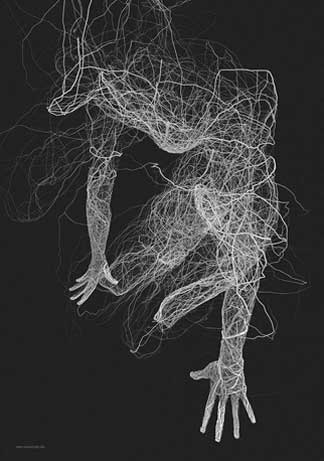

Francisco Varela y su aporte a las ciencias cognitivas
¿Cómo podemos dar cuenta de una fenomenología inobservable a través de fenómenos físicos?
PRESENTACIÓN
Nacido en 1946, Francisco Varela, licenciado en 1967 como biólogo en la Universidad de Chile y doctorado en Biología en la Universidad de Harvard. Decide en 1970 trabajar con Humberto Maturana en la generación de la teoría de la autopoiesis, que presentaron inicialmente en el libro "De máquinas y seres vivos" y luego en la década de los ochenta en la difundida obra "El árbol del conocimiento". Allí desarrollaron una teoría epistemológica basada en el rol del observador y expusieron el concepto de autopoiesis para definir lo vivo; es decir, es autopoiético un sistema que genera la red de componentes que lo integran.
A lo largo de treinta años de investigaciones, Varela exploró las características de la vida y las bases biológicas del conocimiento y del lenguaje.

Realizó aportes a la comprensión de la epilepsia y se internó en las fronteras de las neurociencias y de la psicología cognitiva. Durante sus últimos años se dedicó al estudio de los fundamentos biológicos de la conciencia.
Publicó más de 200 trabajos en revistas especializadas y 15 libros. Entre estos cabe señalar "De cuerpo presente. Las ciencias cognitivas y la experiencia humana" junto a E. Thompson y E. Rosch (1991), "Ética y acción" (1995), "Un puente para dos miradas. Conversaciones con el Dalai Lama sobre las ciencias de la mente" con J. W. Hayward (1997), "Dormir, soñar y morir" (1999) y "El fenómeno de la vida" (2000).
Abstract
Francisco Varela dedicó su vida al trabajo de encontrar una conexión entre los fenómenos conscientes y los mecanismos neurales asociados a ellos. Una aproximación actual a este problema consiste en el análisis de la actividad sincrónica entre grupos de neuronas distribuidas en el cerebro. Varela hizo una contribución sobresaliente a las neurociencias al establecer una relación entre percepción consciente en los seres humanos y la generación de amplias redes de actividad neuronal sincrónica en la corteza cerebral.
La fenomenología psíquica fue una de las grandes pasiones de Varela, y dedicó gran parte de su vida al estudio, tanto científico como vivencial, de este problema. Al final de su vida, se dedicó a impulsar un novedoso paradigma de investigación llamado por él "neurofenomenología" en el cual intentaba conciliar ambos enfoques, el de la investigación neurobiológica y el de su experiencia relacionada a la práctica budista.
Keywords: Ciencias cognitiva, Enacción, Neurociencia, Visión, Percepción. Corteza cerebral, Mecanismo, Conocimiento.
Introducción
En este artículo, se mostrarán algunos aspectos del problema de la conciencia desde una perspectiva neurobiológica, basados en las investigaciones de Francisco Varela.
Se ha propuesto que dichos grupos neuronales estarían en la base de muchos procesos perceptuales y cognitivos fundamentales, actuando a niveles muy elementales (por ejemplo, en el bulbo olfatorio o en la corteza visual) y a niveles más globales (involucrando redes de neuronas distribuidas en amplias regiones del cerebro) (Aboitiz, p 281, 2001). Por ejemplo, las distintas características de un objeto, como pueden ser su color, su forma, su movimiento, el ruido que genera y tal vez su olor puede ser integrado en nuestro cerebro como perceptor totalizados. Sin embargo, el procesamiento de cada una de estas características del objeto ocurre en distintas regiones del cerebro, y una pregunta que ha intrigado a los neurobiólogos por mucho tiempo ha sido cómo se comunican las diversas áreas cerebrales para establecer una percepción unificada (Aboitiz, 2001).
La actividad sincronizada de grupos de neuronas conectando estas distintas regiones del cerebro ha surgido como una muy interesante posibilidad para producir el enlace requerido entre los distintos componentes del procesamiento sensorial. En este contexto, se postula que la sincronía de actividad opera como una especie de "pegamento" que mantiene a las células unidas en su actividad, en base a interacciones recíprocas que refuerzan la mantención de dichos patrones de actividad sincrónica (Aboitiz, p 281 ,2001).
Si bien la sincronía de grupos de neuronas es observable a diversos niveles en el funcionamiento del cerebro, para Varela eran especialmente importantes los procesos de integración a gran escala en la corteza cerebral, que se podrían asociar a la fenomenología consciente (Aboitiz ,2001). Los últimos trabajos de Varela y sus colaboradores marcaron un hito en el estudio de las redes macroscópicas del cerebro, al asociar por primera vez un fenómeno de sincronía a gran escala con la actividad consciente en humanos. A través de un análisis matemático altamente sofisticado de la actividad electroencefalográfica, Rodríguez y colaboradores pudieron observar la generación y el esparcimiento de actividad sincrónica en la corteza cerebral durante una tarea de reconocimiento visual de caras humanas. Esta evidencia indudablemente asocia el fenómeno de la sincronía a algunas experiencias conscientes, aunque como dijimos aún queda por determinar si existe una relación causal entre ambos fenómenos (Aboitiz, p 282 ,2001).
Conciencia y el "problema duro" de la neurociencia
Un problema fundamental en este contexto es la definición de los fenómenos conscientes. Estos incluyen la capacidad de atender a las propias percepciones (más que al "objeto" causante de ellas), la sensación de "yo" en cuanto a agente de intenciones y volición, y la conciencia autobiográfica.
Éste artículo se enfoca específicamente en la capacidad de hacer reflexión y darse cuenta del momento subjetivo de una percepción sensorial, esto es, no la capacidad de percibir el color rojo, sino la "sensación de rojo", que es subjetiva, incomunicable, y evocada por la presencia del rojo. Podemos estar de acuerdo con otras personas respecto de la presencia del color rojo, e incluso si estableciéramos categorías de colores, todos agruparíamos los colores similares al rojo de maneras bastante parecidas (a no ser que existiera un problema visual, como el daltonismo). Sin embargo, no podemos estar seguros que la sensación subjetiva que tenemos cuando vemos el color rojo sea la misma en todos nosotros. Este problema ha sido llamado el "problema duro" de la neurociencia, en tanto que es tremendamente difícil de abordar (Aboitiz, p 283 ,2001).
Es necesario señalar que esta característica de las experiencias subjetivas se dan una vez que estas son conscientes, es decir que podemos hacer reflexión sobre ellas. Si somos inconscientes de un dolor, o de una percepción visual (como ocurre en el caso de la visión ciega o "blindsight", en que por lesión en el área visual primaria se pierde la conciencia de la percepción visual, a pesar que se mantiene una cierta capacidad de discriminación visual), obviamente este componente subjetivo no está presente (Aboitiz,2001). Este elemento subjetivo es lo que algunos filósofos han llamado fenomenología de primera persona, y se aplica a todos los ámbitos de las experiencias conscientes: en ellas siempre existe un componente incomunicable. Una de las tareas que Francisco Varela emprendió en los últimos períodos de su vida se relacionó precisamente con la intención de la solución de este problema, a través de lo que él llamaba "metodología en primera persona", o "neurofenomenología". De esta manera, Varela intentaba dar una explicación de lo que aparece como inexplicable, que es, el componente subjetivo, incomunicable de nuestras percepciones (Aboitiz, p 284 ,2001).
Reflexión o metarrepresentaciones como base para la conciencia
La fenomenología consciente se basa en la capacidad de establecer "metarrepresentaciones" (o reflexiones); esto es, generar representaciones neuronales (o mapas) en un formato común acerca de las múltiples operaciones perceptuales, que permiten comparar dichas percepciones con el sistema de intencionalidad y de valores, de manera de generar decisiones para conductas futuras (Aboitiz,2001). De esta manera, se establece una especie de ojo interno, que monitorea las operaciones cognitivas en función de las decisiones a tomar. Un elemento fundamental en esto son los llamados mecanismos "top-down" que modulan la dinámica intrínseca de las redes tálamo-corticales, y crean predicciones acerca de los eventos sensoriales en el futuro inmediato. Estos mecanismos "top-down" se asocian a los fenómenos de atención, memoria de trabajo, y motivación entre otros, y su sustrato anatómico serían redes asociadas a los sistemas límbicos, a la corteza pre frontal y al cíngulo anterior (Aboitiz, 2001).
Es imprescindible explicar que el proceso consciente no sería un fenómeno del todo o nada, sino que más probablemente existiría una transición gradual desde la fenomenología totalmente inconsciente hacia la "toma de conciencia" en plena magnitud. Esto debido a que posiblemente los estados conscientes se asocian al desarrollo de áreas corticales filogenéticamente nuevas, y que
maduran tardíamente en la ontogenia. De esta manera, los sistemas de metarrepresentaciones se desarrollarían paulatinamente, estableciendo capas de proyecciones "bottom-up" y sistemas de control "top down" cada vez más complejos, de los cuales en algún momento surgiría la experiencia sensorial como un fenómeno subjetivo (Aboitiz, 284, 2001).
Francisco Varela, propone que las mencionadas metarrepresentaciones se organizan a través de la sincronización transigente de las descargas de las neuronas involucradas. De esta manera, las metarrepresentaciones tomarían la forma de verdaderas constelaciones de neuronas, distribuidas en diversas regiones del cerebro e incluyendo tanto regiones de orden superior (tal vez en una mayor proporción) como regiones sensorimotoras primarias e interacciones tálamo-corticales. Los últimos hallazgos del grupo de Varela precisamente apuntaron a la detección de conjuntos sincrónicos de gran escala, que podrían dar cuenta de las metarrepresentaciones postuladas para la generación de los estados conscientes. Estos trabajos marcarán un hito en los estudios neurobiológicos de la conciencia (Aboitiz, 284, 2001).
Discusión
Es indudable que los mecanismos de metarrepresentación, sincronía neuronal y otros pueden ser absolutamente necesarios para la generación de los estados subjetivos, pero desafortunadamente no dan cuenta de cómo éstos se producen en cada uno de nosotros. Esto no quiere decir que el estudio de los sistemas de redes neuronales, y las investigaciones en sincronía neuronal sean vacíos. Lejos de ello. Estos estudios posiblemente nos permitan describir mejor el funcionamiento del cerebro, lo que es una meta de la ciencia occidental. De esta manera, la contribución
de Varela a la comprensión de los fenómenos conscientes (en cuanto a fenómenos científicamente observables) ha marcado un hito que no sólo perdurará como tal, sino que ha abierto la posibilidad de investigación en un ámbito que estaba técnicamente vedado hasta que él y sus colaboradores lograron desarrollar una metodología adecuada. En este sentido, los estudios de Varela son pioneros en una línea de investigación naciente, que probablemente nos dará muchas respuestas acerca de la neurobiología de los procesos neuronales a gran escala (Aboitiz, 2001).
Bibliografía
Artículos científicos
- Aboitiz, Francisco. (2001). Sincronía, conciencia y el "problema duro" de la neurociencia. Revista chilena de neuro-psiquiatría, 39(4), 281-285. Obtenido de https://dx.doi.org/10.4067/S0717-92272001000400003
- Ojeda, César. (2001). Francisco Varela y las ciencias cognitivas. Revista chilena de neuro-psiquiatría, 39(4), 286-295. Obtenido de https://dx.doi.org/10.4067/S0717-92272001000400004
- SILVA, HERNÁN. (2001). Francisco Varela y su aporte a las ciencias cognitivas. Revista chilena de neuro-psiquiatría, 39(4), 279. Obtenido de https://dx.doi.org/10.4067/S0717-92272001000400002
- Caracciolo, M. (2012). Fictional Consciousnesses: A Reader's Manual. Style, 46(1), 42-65. Retrieved from http://www.jstor.org.uchile.idm.oclc.org/stable/10.5325/style.46.1.4
Libros
- Lutz Antoine, Phenomenology and the Cognitive Sciences 1, “Toward a neurophenomenology as an account of generative passages: A first empirical case study, Kluwer Academic Publishers,(2002) pp 133 – 167.
- Segovia- Cuellar, Revista Colombiana de Psiquiatría, Vol. 41 N° 3, “Neurofenomenología: Proyecto para una ciencia de la experiencia vivida”, (2012) PP 644 – 658.
- Chalmers David, 2010, “The character of consciousness”, Estados Unidos, Oxford University.
- J. Varela, Thompson Evan, Rosch Eleanor, 1997, “De cuerpo presente, Las ciencias cognitivas y la experiencia humana”, Barcelona, España, Editorial Gedisa.
- Varela, F. (2000). Four batons for the future of cognitive science, in Envissioning Knowledge, B.Wiens (Ed.), Dumont Cologne.